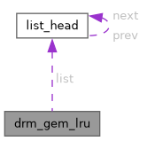

- Generated by
 1.15.0
1.15.0
|
XenevaOS
|
#include <drm_gem.h>

Public Attributes | |
| long | count |
| struct list_head | list |
struct drm_gem_lru - A simple LRU helper
A helper for tracking GEM objects in a given state, to aid in driver's shrinker implementation. Tracks the count of pages for lockless &shrinker.count_objects, and provides &drm_gem_lru_scan for driver's &shrinker.scan_objects implementation.
Any access to this kind of object must be done with drm_device::gem_lru_mutex held.
| long drm_gem_lru::count |
@count:
The total number of backing pages of the GEM objects in this LRU.
| struct list_head drm_gem_lru::list |
@list:
The LRU list.